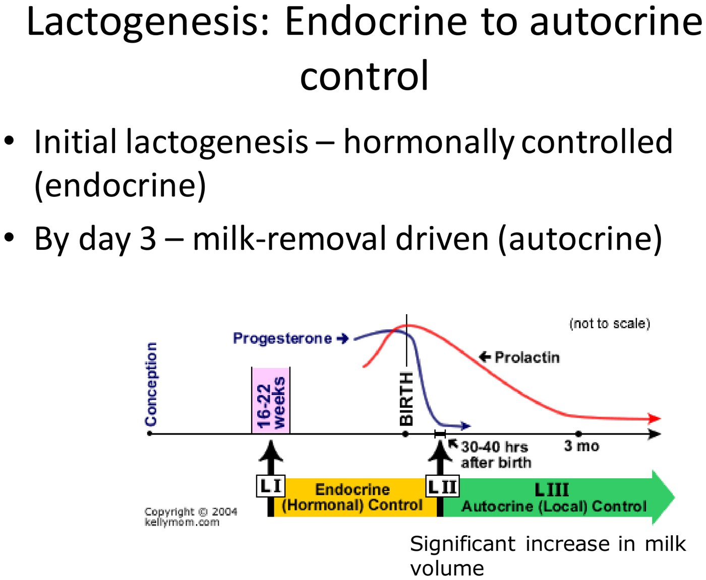
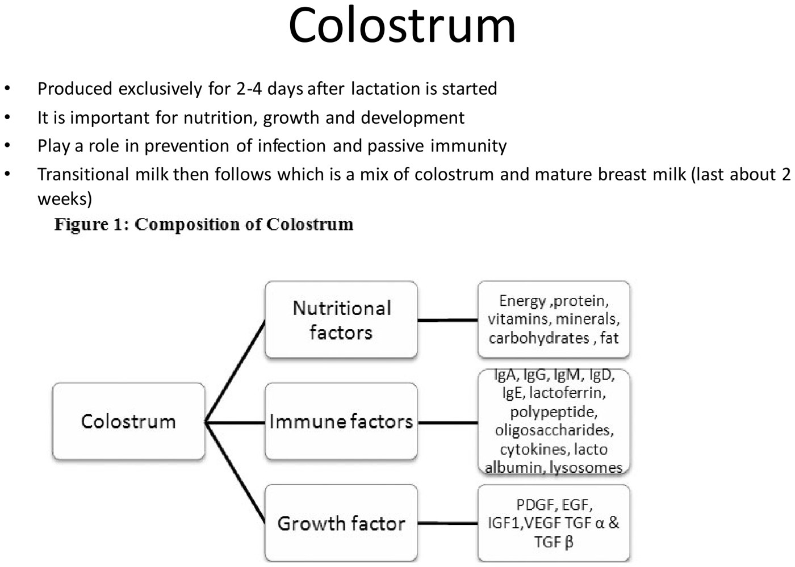
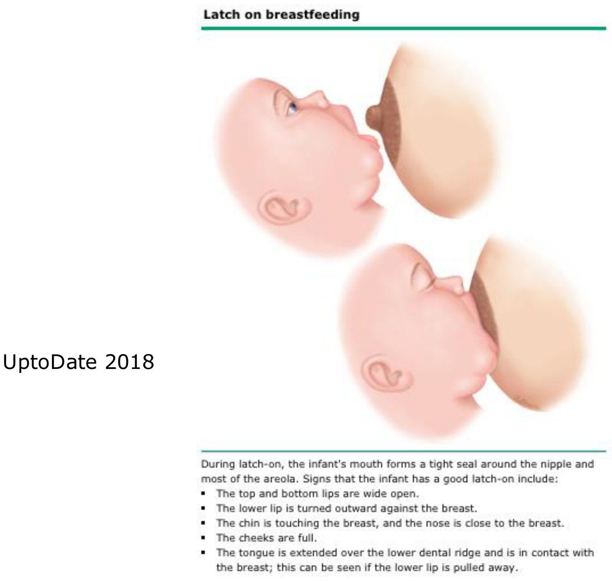

Lactation
- Three things make milk: prolactin (anterior pituitary), oxytocin (posterior pituitary), and milk removal, which must start by day 3. Delivering the placenta drops progesterone and unlocks prolactin; suckling lowers dopamine (more prolactin) and releases oxytocin (let-down).
- Endocrine first, autocrine by day 3: after that, supply follows demand. Estrogen builds ducts, progesterone builds lobules.
- Colostrum for the first 2–4 days: antibodies, cells, vitamins A, D, E, K. Then transitional milk for ~2 weeks. Exclusive breast milk for 6 months, continued to 2 years or beyond (WHO).
- Mastitis (usually S. aureus, MRSA possible): a red, tender wedge with fever > 38.5 °C. Antibiotics and keep feeding. An abscess needs drainage. Low supply (production or extraction) is the most common reason to stop → lactation consultant.
- Contraindications: HIV (in developed countries), active psychosis, active TB, herpetic breast lesions, chemotherapy, infant galactosemia, PKU with high phenylalanine. Avoid estrogen contraception. Storage “laws of 6”. Stop lactation with cabergoline 1 mg once; don't wean abruptly.
Learning Objectives
- Describe the anatomy of the breast as it pertains to lactation.
- Describe the physiology of breastfeeding.
- List reasons that milk supply may be less than required.
- Explain the components and benefits of colostrum.
- List reasons to supplement with formula.
- Identify optimal timing of feeding over the first week of life.
- List resources to assist with breastfeeding.
- Identify contraceptives that may interfere with breastfeeding.
Dr. Laura Sovran, general obstetrics & gynecology. One 27-minute recording and a 50-slide deck. Mastitis also appears in 5.7; the postpartum breast timeline is in 6.8.
Four Words
| Term | Means |
|---|---|
| Mammogenesis | Breast preparation: development of the gland. Estrogen → ducts; progesterone → lobules/alveoli. |
| Lactogenesis | Synthesis and secretion from the alveoli. Stage I by mid-pregnancy: competent to secrete. Stage II after delivery: copious secretion. |
| Galactokinesis | Ejection of milk (let-down) |
| Galactopoiesis | Maintenance of lactation |
Breast Anatomy

- Each breast has 15–20 lobes, separated by fibrous septa radiating from the centre, with fibrofatty tissue between them.
- Each lobe divides into lobules, each with 10–100 alveoli.
- Alveoli are lined by milk-secreting epithelium and wrapped in myoepithelial cells. When these contract (oxytocin), milk is squeezed into the ducts.
- One lactiferous duct leaves each lobe and widens into a lactiferous sinus, which opens on the nipple.
How Milk Is Made and Let Down
 Three factors, and removal has to start by day 3. Slide from the deck.
Three factors, and removal has to start by day 3. Slide from the deck.

Endocrine → autocrine. Hormones start it; by day 3 milk removal drives supply (supply = demand). Prolactin matters less after about 3 months. Slide from the deck. The reflex arc. Suckling → nipple mechanoreceptors → hypothalamus. Prolactin makes milk; oxytocin squeezes it out. The baby's cry alone can trigger oxytocin. Slide from the deck (Silverthorn, Human Physiology).
The reflex arc. Suckling → nipple mechanoreceptors → hypothalamus. Prolactin makes milk; oxytocin squeezes it out. The baby's cry alone can trigger oxytocin. Slide from the deck (Silverthorn, Human Physiology).
| Trigger | Change | Effect |
|---|---|---|
| Delivery of the placenta | ↓ Progesterone (which blocks lactose synthesis and competes at glucocorticoid receptors) | Prolactin can act → lactogenesis |
| Nipple stimulation / milk removal | ↓ Dopamine from the hypothalamus (dopamine inhibits prolactin) | ↑ Prolactin → more milk |
| Nipple stimulation | ↑ Oxytocin (posterior pituitary) | Myoepithelial contraction → let-down; also helps the uterus involute |
Colostrum and Breast Milk

| Fact |
|---|
| Colostrum alone for 2–4 days: antibodies (IgA and others), cells, vitamins A, D, E, K; passive immunity and infection prevention |
| Transitional milk (colostrum + mature milk) for ~2 weeks, then mature milk |
| Exclusive breast milk for 6 months (some say 4–6; early food exposure may mean fewer allergies), then complementary foods with breastfeeding to 2 years or beyond (WHO) |
| Breast size doesn't matter. Composition varies by time of day: watery in the morning, fattier in the evening. |
| Who benefits | How |
|---|---|
| Infant: gut | Faster gastric emptying; in preterms more lactase activity, lower intestinal permeability, less NEC |
| Infant: short term | Fewer gastroenteritis, respiratory infections, otitis media, UTI, sepsis while breastfed |
| Infant: long term | Possible protection (some evidence controversial): obesity, diabetes, allergy, cancer, adult CVD, cognitive and neurodevelopmental outcomes |
| Mother | Faster recovery (oxytocin → involution, which may help prevent delayed PPH) · less stress response · longer anovulation · convenient · less breast and ovarian cancer · less cardiovascular disease |
| Society | No water, waste, energy, packaging or transport |
The First Week: How to Feed
- First feed within an hour of birth if possible, with skin-to-skin (bonding, milk supply, less stress for both).
- On demand: follow infant cues, especially in the first 6 weeks.
- If the baby is too sleepy to feed (common in the first 24 h), hand-express every 2–3 hours and keep the milk to supplement later.
- Feed length varies with the baby (one may take 40 minutes, another under 10).
- Positions: cradle, cross-cradle, football, side-lying.
- She has a right to feed anywhere. Shaming public breastfeeding undermines it.

When It Isn't Going Well
Latching problems, painful cracked nipples, Candida (oral thrush in the baby, which needs treating), engorgement, blocked ducts. Refer to a lactation consultant early. (The deck's photographs of oral thrush, mastitis and an abscess are left out; the findings are described below.)
| Mastitis | Lactational abscess | |
|---|---|---|
| Looks like | A firm, red, tender area that comes on fast; fever > 38.5 °C, chills, myalgia, flu-like; tender axillary nodes. Rarely septic shock. Diagnosis is clinical. | A tender, fluctuant area, often after mastitis. Rare unless lactating. |
| Organism | S. aureus, including MRSA | S. aureus |
| Treatment | Antibiotics: the recording gives cephalexin 500 mg PO QID × 10–14 d, or a cloxacillin-type antibiotic. Keep breastfeeding (or pumping). Acetaminophen, ibuprofen, cool compresses. | Incision and drainage or needle aspiration, plus antibiotics. Early infection can be reversed with nursing, manual expression and cloxacillin 500 mg PO QID × 7–10 d. Keep emptying the breast; analgesia; a good bra. |
| Risk factors | Prior mastitis · blocked ducts · cracked or excoriated nipples · breast pump use · nipple creams (especially antifungals) | |
Other causes of nipple or breast pain: nipple injury from a poor latch · nipple vasoconstriction (Raynaud's: the nipple blanches) · engorgement (interstitial edema) · plugged ducts · infection · oversupply · dermatitis or psoriasis.
Low Milk Supply
The most common reason women stop breastfeeding. Diagnose poor intake from the nursing history, fewer wet and dirty diapers, and excess infant weight loss. Assess the latch, augment by pumping, supplement, review drugs, and refer.
| 1. Inadequate production | 2. Poor extraction |
|---|---|
| Insufficient breast development in pregnancy · prior breast surgery or radiation · insulin resistance, high androgens, PCOS, prolactinoma · retained placenta (progesterone stays high) · Sheehan syndrome after a major PPH · drugs: dopamine agonists*, decongestants, estrogen | Poor latch · infrequent feeding · cleft lip/palate · sucking or swallowing disorders · neuromotor delay · prematurity · separation of mother and baby. Special needs: cleft palate, NICU babies, neurological impairment, Pierre Robin (small jaw), trisomy 21 |
*The slide says “dopamine antagonist”; the recording says agonists, which is right. Dopamine suppresses prolactin, so a dopamine agonist (e.g. cabergoline, the deck's own drug for stopping lactation) reduces supply, and an antagonist would raise prolactin.
Diet, Drugs and Contraindications
| Exposure | Advice |
|---|---|
| Nutrition | More fluids, calories, calcium and vitamins |
| Smoking | Avoid: more SIDS and infant respiratory illness |
| Alcohol | Not contraindicated, but excess blunts the prolactin response and may affect infant motor development. Nurse just before a drink; wait 2 h per standard drink. |
| Street drugs | Contraindicated (cocaine and cannabis have long-term effects on the baby). Opioid dependence in a supervised methadone program is compatible. |
| Medications | Only what's needed. Goal: milk concentration < 10% of the maternal weight-adjusted dose. |
| Contraindications to breastfeeding |
|---|
| HIV in developed countries (WHO says acceptable if both are on ART with a suppressed viral load) · active psychosis · active TB · herpetic breast lesions · antineoplastic drugs · galactosemia in the infant · PKU if the infant's phenylalanine is too high · she declines |
Storage, Supplementing and Stopping
| Topic | |
|---|---|
| Laws of 6 | Room temperature 6 hours · fridge 6 days · freezer 6 months (longer in a deep freezer; Medela gives stricter guidance) |
| Reasons to supplement with formula | Patient choice (respect autonomy; don't guilt her) · inadequate supply with poor growth or failure to thrive · infant dehydration, hypoglycemia, weight loss or poor weight gain |
| Weaning | A personal decision. Abrupt weaning isn't recommended: the rapid prolactin drop may worsen depressive symptoms, and it causes engorgement, blocked ducts and infection. Gradual is best, ideally child-led after 6 months, dropping feeds slowly. |
| Stopping lactation | Cabergoline 1 mg once (a potent dopaminergic drug) · supportive bra, ice packs, analgesics, cabbage leaves |
| Contraception while breastfeeding |
|---|
| Avoid estrogen: it may lower milk quality and quantity. Safe: hormonal or copper IUD · progestin-only pill · condoms and other barriers · Depo-Provera (IM medroxyprogesterone). Timing rules are in 6.8. |
Resources: LHSC lactation consultants (mavins.lhsc.on.ca), International Breastfeeding Centre videos, the Canadian Paediatric Society's breastfeeding and human milk banking statements, WHO exclusive breastfeeding guidance.
Built from Dr. Laura Sovran's “Lactation” module: the 27-minute recording and its 50-slide deck. Photographs of breasts and of an infant's mouth (oral thrush, mastitis, abscess, feeding photos) are left out and described in text; the diagrams are kept. Discrepancy flagged: the low-supply slide lists “dopamine antagonist” where the recording says agonists, and the recording is followed (explained above). The deck spells cabergoline “cabergoloine”. Caption corrections: mammogenesis (“Mama Genesis”), myoepithelial (“myopia fuel”), autocrine (“Auto-Tune”), cloxacillin (“cost discipline”), Sheehan (“sheep”) and cabergoline (“Coburg Women”). The mastitis antibiotics in the recording were garbled (“complex 500 mg” = Keflex/cephalexin); the slide's cloxacillin regimen is quoted directly.